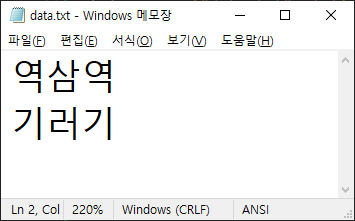

8. 파이썬 입출력
1. 입력의 옳은 예가 아닌 것은?
- 키보드로부터 입력
- 파일로부터 입력
- 모니터로부터 입력
- 마우스로부터 입력
2. 출력의 옳은 예가 아닌 것은?
- 파일로 출력
- 스피커로 출력
- 프린터로 출력
- 마이크로 출력
3. 키보드로 문자를 입력받을 때 사용하는 함수는?
- keyboard()
- str()
- input()
- print()
4. 키보드로 숫자를 입력받을 때 사용하는 함수 조합은?
- int( input() )
- input( int() )
- str( input() )
- input( str() )
5. 파일을 새로 만들고 그 안에 내용을 쓰려 한다. 잘못된 부분은?
file = open("data.txt", 'r') ⓐ
file.write("내 이름은 별똥별") ⓑ
file.close() ⓒ
- 잘못된 부분 없음
- ⓐ
- ⓑ
- ⓒ
6. 다음 코드는 파일에서 내용을 읽어오는 코드이다. data.txt 파일의 내용이 다음과 같을 때 이 코드의 실행 결과는?

file = open("data.txt", 'r')
line = file.readline()
print (line)
file.close()
- 역삼역
- 기러기
- 역삼역
기러기 - 아무 것도 표시되지 않는다.
7. 다음 코드는 파일에서 내용을 읽어오는 코드이다. data.txt 파일의 내용이 다음과 같을 때, 파일의 전체 내용을 다 가져오려 하는 경우 ??? 부분에 맞는 것은?
file = open("data.txt", 'r')
lines = file.readlines()
for line ??? lines :
print (line)
file.close()
- as
- in
- all
- with
8. 다음 코드는 엑셀용 csv 파일을 만들기 위한 코드이다. 엑셀에서 열었을 때 왼쪽처럼 보일 거라는 기대와 달리 오른쪽 그림처럼 보이고 있다. 해결 방법은?

file = open("data.csv", 'w')
file.write ("이름,전화번호")
file.write ("홍길동,02-1111-1111")
file.write ("박길동,02-1111-2222")
file.write ("최길동,03-1111-3333")
file.close()
- 확장자를 csv가 아닌 xlsx 로 바꿔서 생성한다.
- 각 줄의 끝에 “,“를 추가한다.
- 각 줄의 끝에 개행문자인 “\n“을 추가한다.
- 각 줄의 앞에 “,“를 추가한다.